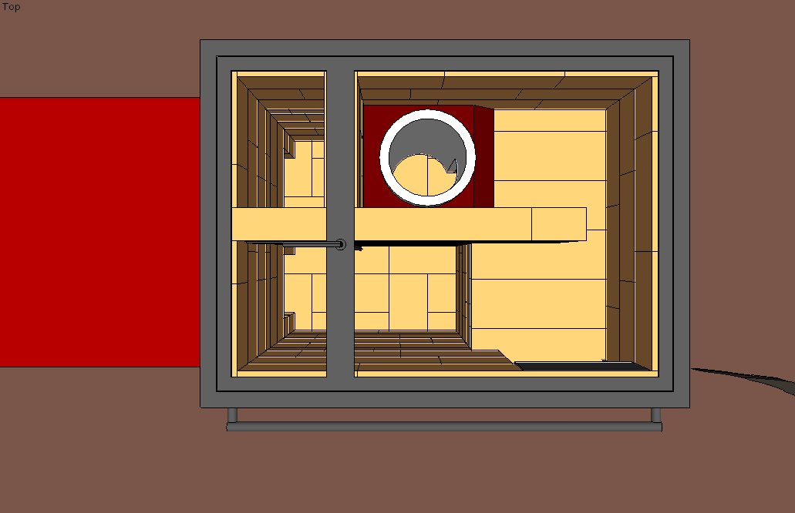

Les expériences en cours
Cette page regroupe des poêles expérimentaux que nous testons en ce moment. Avis aux pyromaniaques ! Nous ne fournissons aucune garantie sur le fonctionnement correct de ces poêles.
|
Cuisinière maçonnée |
Chauffe-eau Rocket Stove |
 Le Turbomasse |
|---|
Cliquez sur une case pour voir la ficher du poêle correspondant.
Les objectifs de développement
À ceux qui souhaitent se lancer eux-mêmes dans des tests concernant les Batchrockets, un petit récapitulatif des enjeux :
Nous considéront que les objectifs concernant les rendements de combustion sont atteints. Voir l'article comparaisons. Nous n'essayons donc pas d'améliorer le Batchrocket de ce point de vue là.
En revanche, il reste beaucoup de choses à améliorer :
- Réduire la hauteur cheminée interne (à rendement de combustion égal) pour faire des poêles moins hauts ;
- Réduire la vitesse de combustion (à rendement de combustion égal) pour diminuer la surface interne (SIA) nécessaire et donc la masse afin d'obtenir des poêles de 200-300 kg/kW (idéalement sur un poêle double peau) ;
- Trouver un bon système de récupération de la chaleur des gaz pour augmenter le rendement de récupération. Idéalement il faut un système :
- Simple à bâtir ;
- Simple à entretenir (pas de chicanes !) ;
- Cohérent structurellement par rapport aux dilatations de température. En un mot : solide ;
- Créant le moins de pertes de charges possible (ce qui permet d'utiliser des cheminées étroites et non isolées) ;
- Utilisant le moins de matériaux réfractaires possibles ;
- Permettant une diversité de formes pour adapter les poêles aux rénovations ;
- Avec une émission de chaleur plus importante en partie basse (chaleur aux pieds et pas vers tête).
Licence :
Les plans que vous trouverez sur cette page et sur ce site sont distribués librement, sous une licence open-source CC BY-SA 4.0 : vous êtes libres de partager, d'utiliser, de transformer ce travail, même pour une utilisation commerciale tant que vous citez les auteurs originaux et que vous partagez les résultats de votre travail sous les mêmes conditions.
Cuisinière de 2500W
Malgré des apparences toutes simples, cette cuisinière est là pour tester un Batchrocket différent suite aux récentes expériences de Peter vd Berg et des poêliers israëliens Kamin Masa.
Elle est aussi conçue dans l'optique d'être extensible : il est possible de construire cette cuisinière sans banc. Dans ce cas on profite tout de même d'une masse conséquente (650 kg environ) et d'un rendement correct.
Les différences par rapport à un Batchrocket classique :
- La cheminée interne est un tiers moins haute : 600 mm au lieu de 915 mm
- Il y a 23 cm au dessus de la cheminée interne, au lieu des 30 cm minimum recommandés. Par rapport aux surfaces standard de cloches : la surface directement au dessus de la cheminée interne fait 6 fois la section de la cheminée interne.
- Les gaz en sortie de la cheminée interne arrivent dans une toute petite cloche où ils devraient normalement finir leur combustion.
Pourquoi faire ça ?
Une cheminée interne moins haute permettrait de faire des poêles moins haut, donc plus discrets esthétiquement. Cela permettrait aussi de faire des cuisinières maçonnées plus puissantes.
Les expériences à mener :
- Tester la qualité de la combustion
- Tester la SIA (surface interne absorbante) qui permet d'avoir des gaz à 100°C en sortie. La cheminée interne étant moins haute, il faut voir si la surface reste identique à la surface nominale ou pas.
- Tester si le clapet de démarrage permettrait une sortie de cheminée en 150 mm
- Tester les températures dans le four et sur la plancha ainsi que l'inertie du poêle.
Vue 3D du poêle avec banc de chauffe.
Fiche technique :
- Puissance : 2500W avec 2 flambées par jour, mais peut sûrement aller au moins à 5000W avec 4 flambées par jour
- Poids (sans le banc de chauffe) : environ 650 kg
- Dimensions : 66x88 cm au sol et 89 cm de haut
- Version : 2
- Date de publication de la V1 : 7 Novembre 2017
- Date de publication de la V2.2 : 12 Novembre 2017
- Fichier Sketchup : batch165_sidewinder_cuisiniereV2_2.skp
- Débit : debit_cuisiniere165mm.txt
- Manuel en .pdf : manuel_autoconstruction_cuisiniere_batchrocket_2500W.pdf
Construction en cours :
En photos :

Cuisinière expérimentale en construction.
Remarques :
Les expériences en cours menée par Peter vd Berg sont décrites sur le forum : http://donkey32.proboards.com/thread/2341/different-batch-core-riser-all?page=1. Celles de Kamin Massa sont visibles sur youtube ou sur leur page facebook : facebook.com/kaminmassa/.
En vidéo :
À gauche, test d'un Batchrocket avec le port sur le dessus du foyer et sans cheminée interne. À droite, poêle fabriqué par Kamin Massa. Source : Peter van den Berg, 2017 et Kamin Massa, 2017.
Images :

Vue 3D du poêle avec banc de chauffe.
- 
-

Vues 3D du poêle sans la plancha.
Chauffe-eau Rocket Stove
Ce chauffe-eau à bois, encore appelé poêle bouilleur, sert à chauffer directement l'eau à l'intérieur d'un cumulus.
Le principe d'utilisation est simple :
- On fait une flambée dans le Rocket Stove.
- L'eau du cumulus est directement chauffée. Pas d'échangeur ni de circuit secondaire.
- Une fois l'eau suffisament chaude, on arrête la flambée. L'eau chaude est disponible par le réseau d'eau sous pression de la maison. Pas de différence à ce niveau là par rapport à un cumulus électrique.
- Le poêle est isolé, ce qui lui permet de garder l'eau chaude pendant un certain temps.
Le développement initial a été réalisé par l'association Les Outils de l'Autonomie. Le tutoriel de fabrication est disponible sur cette page : outils-autonomie.fr/outils/chauffe-eau-à-bois/. Nous poursuivons le développement conjointement.
Les objectifs du développement sont :
- Améliorer le rendement de combustion et le rendement total sur l'eau (combustion x récupération de la chaleur par l'eau).
- Permettre un chargement par lot (Batchrocket !) pour chauffer en une seule fois toute l'eau.
- Permettre une sortie des gaz directement par le mur (sortie "en ventouse").
{kind=link}
Chauffe eau à bois dont le coeur de chauffe est un Rocket Stove. Sur la photo, il manque l'isolation qui vient autour de l'ensemble.Source : Les Outils de l'autonomie.
Pourquoi faire ça ?
L'objectif est de faire un poêle dédié uniquement à la production d'eau chaude sanitaire.
Nous ne recommandons pas les poêles de masse combinant chauffage et eau chaude. L'idée est séduisante : chauffer de l'eau en même temps que l'on chauffe sa maison avec son poêle de masse. Pour le faire, la solution classique consiste à placer un échangeur dans le poêle et à le coupler à un ballon d'eau chaude adapté.
En pratique, nous trouvons que ce n'est pas une bonne solution pour les raisons suivantes :
Premièrement, les besoins d'eau chaude ne sont pas corrélés aux besoins de chauffage. Par exemple, une maison où vivent 4 personnes demandera la même puissance de chauffe si les 4 habitants sont là ou s'il n'y en a que 2 de présents. Par contre, les besoins en eau chaude seront divisés par deux. Dans ce cas il y a alors sur-production d'eau chaude qui nécessite un circuit de décharge et une régulation électronique. Que se passe-t-il en cas de panne d'électricité ? La pression générée par l'eau chaude risque de faire exploser le circuit à l'intérieur du poêle et/ou à l'extérieur.
Deuxièmement, au minimum, il faut que l'échangeur présent dans le poêle de masse soit installé en thermosyphon. C'est-à-dire que l'échange de chaleur entre le poêle et le cumulus se fasse naturellement sans électronique. Ce système nécessite que le cumulus soit placé au dessus du poêle. C'est une grosse contrainte en pratique.
Troisièmement, l'échangeur dans le poêle de masse doit être accessible et vidangeable. C'est aussi une grosse contrainte en pratique.
Quatrièmement, le coût d'un tel système est loin d'être négligeable. Lors de nos tests, le coût s'élevait environ à 1500€ pour un système conçu dans les règles de l'art et pour durer, hors installation.
Quelle énergie faut-il pour chauffer de l'eau ?
Chauffer 1kg d'eau (quelque soit sa température initiale) de 1°C demande 1000 calories soit 1,16 Wh.
Si l'on veut échauffer 100L d'eau de 40°C, il faut donc fournir une énergie Q = 1,16 x 100 x 40 = 4,6 kWh.
4,6 kWh correspond à l'énergie moyenne contenue dans 1kg de bois. Donc si on arrive à brûler 1kg avec un rendement de combustion proche de 100% et si on arrive à transférer toute cette chaleur à l'eau (rendement de récupération sur l'eau de 100%) alors, théoriquement, on peut échauffer 100L d'eau de 40°C avec seulement 1 kg de bois !
Les tests effectués :
Début Septembre 2017, nous avons analysé la combustion du poêle, le rendement global et le rendement sur l'eau.
Poêle bouilleur en cours d'analyse avec le Testo 330-2 LL.
Méthodologie :
- On teste l'humidité pour vérifier qu'elle soit inférieure à 20%. Il faut fendre le bois et mesurer immédiatement l'humidité à coeur avec l'humidimètre.
- Le bois est pesé, mesuré. Les sections utilisées mesurent entre 2x2x25 cm et 4x4x25 cm environ.
- On mesure la température de l'eau initiale, puis l'évolution des températures au fil du temps.
Résultats :
- 40°C d'augmentation de température de l'eau (de 16 à 56°C) en 70 min et avec 2,5 kg de bois.
- Rendement total moyen d'environ 90%.
- Rendement sur l'eau de 23%.
- Température moyenne des fumées en sortie : environ 130°C.
- Monoxyde de carbone : entre 1500 et 2000 ppm en moyenne, mais très très variable.

Analyse de combustion avec le Testo 330-2 LL.
Commentaires :
À première vue, on ne comprend rien au graphique..!
En y regardant de plus près, on voit que le rendement total (en rouge) ne descend quasiment jamais en dessous de 90%. C'est excellent. Les températures des fumées en sortie de cheminée (en bleu foncé) varient autour de 130°C. Excellent aussi.
Le tirage en fin de flambée était de 1.3 Pa.. autant dire quasiment rien ! Les Rockets Stoves fonctionnent très bien avec des toutes petites cheminées d'évacuation. C'est un gros point positif : pas besoin de cheminée conventionnelle, une sortie ventouse avec deux mètres de conduite verticale suffisent.
Là où ça fait mal :
Premièrement, la combustion n'est pas stable. Pour point de référence, la norme Flamme verte est à 3000 ppm (particules par million) de CO en pleine flambée. Ici, le taux de monoxyde de carbone varie beaucoup. En moyenne c'est dans la norme mais pour un Rocket Stove en pleine flambée on devrait être autour de quelques dizaines de ppm.
En cause :
- Le Rocket Stove avec le tube de chargement incliné est une mauvaise idée. Mieux vaut utiliser un Rocket Stove en "J". La zone de combustion y est beaucoup plus localisée ce qui évite les emballements et les deux coudes apportent un meilleur mélange des gaz;
- Pas d'isolation de la cheminée interne du Rocket Stove et une forme carrée qui empêche la formation d'un beau vortex.
Deuxièmement, il faut recharger le Rocket Stove assez régulièrement. Toutes les 10 min envion.
Troisièmement, 2,5 kg de bois ce n'est vraiment pas beaucoup, mais le rendement sur l'eau n'est "que" de 23%. En d'autres termes, 23% de l'énergie sert à chauffer l'eau. Le reste correspond aux pertes liées :
- À une combustion incomplète;
- À la température et à la quantité de gaz en sortie de cheminée;
- À la chaleur qui chauffe la pièce plutôt que l'eau.
En cause :
- Le Rocket Stove et le cumulus ne sont pas isolés donc une grosse partie de la chaleur chauffe la pièce plutôt que l'eau;
- Le cumulus à l'intérieur est trop petit. Il n'a pas assez de surface de contact avec les gaz. En isolant l'extérieur du poêle bouilleur, on pourrait au moins doubler le volume du cumulus : passer de 50 à 100 voir 150L de réserve d'eau.
Photos du poêle pendant les tests.
Conclusion :
Pour améliorer ce modèle, les prochains tests inclueront un Batchrocket à la place du Rocket Stove. Un plus grand volume d'eau et une isolation de l'ensemble.
Mais restons sur terre : c'est déjà un très bon poêle bouilleur : Bon rendement de combustion et sur l'eau. Simple à construire. Simple à utiliser.
En comparaison, la combustion est déjà bien meilleure que certains poêles bouilleurs vendus en Europe pour les habitations hors réseaux. Dans ceux-ci le feu est fait directement en dessous du cumulus dans un petit foyer. Les flammes se refroidissent directement au contact du cumulus et la combustion des gaz est très incomplète.
Le coût de ce genre de système dans le commerce tourne autour de 2000€..
Dans le reste du monde, des systèmes aussi simples (ou même plus complexes) mais beaucoup moins efficaces sont utilisés :
Âne Bouilleur utilisé en Australie. Rendement sur l'eau sûrement inférieur à 5%. Copyright : Johanna (josworld) travelblog.org/Oceania/Australia/Queensland/blog-418376.html
Le Turbomasse
L'idée de ce poêle est de combiner un poêle en acier classique à une cloche maçonnée en briques pour avoir un système :
- Très peu cher : le coût de quelques briques et d'un poêle Turbo autoconstruit ou acheté.
- Avec de l'inertie : la cloche récupère la chaleur pendant la flambée et la diffuse doucement ensuite.
- Plus confortable : rayonnement basse température et inertie.
Toujours en collaboration avec l'association Les Outils de l'Autonomie, nous allons tester ce système avec les poêles autoconstruits qu'ils ont développés et avec les poêles Turbos du commerce.
Le tutoriel de fabrication de leur poêle est disponible sur cette page : outils-autonomie.fr/outils/po%C3%AAle-turbo/.
{kind=link}
Poêle Turbo autoconstruit.Source : Les Outils de l'autonomie.
Des poêles similaires ont été construits par Eduardo Markina, les compte-rendus sont disponibles ici, ici et ici.
Poêles en fonte avec une cloche en briques.Source : Eduardo Markina, Estufas de inercia. Pas de licence.